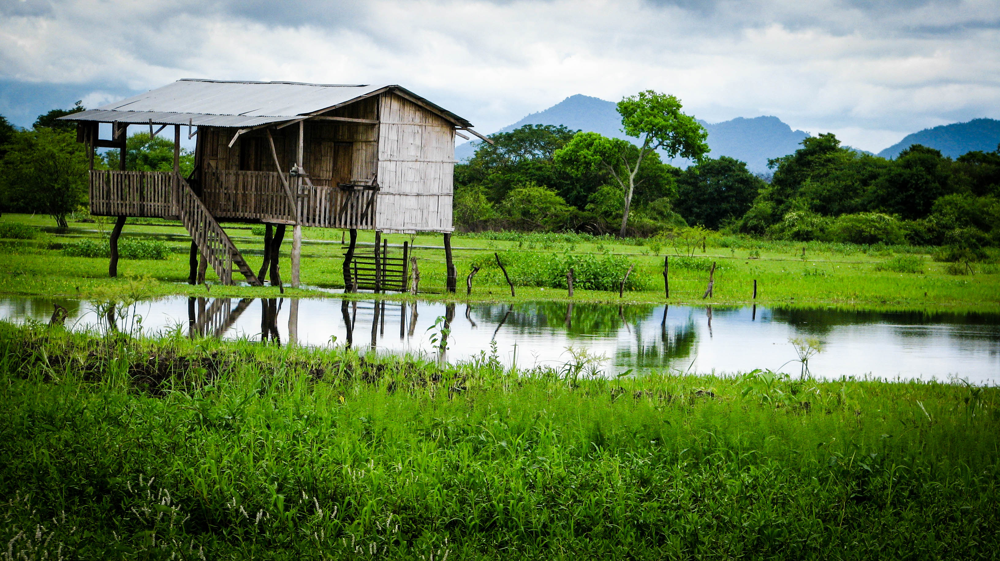

I love to travel. There is something incredible about stepping off the plane into a place one has never been before. I always take a moment to stop and soak in the smells, sounds, and sights of this unknown culture. I embrace the unique differences of each country I encounter, and I treasure the meeting of new souls. Canada, Mexico, England, China, Ecuador, Peru, Dominican Republic, Zambia, Ireland.
Food is not merely fuel, it is a beautiful experience full of emotion and memory. Tasting new cuisine is a gift and a delight.
But the most important thing that you should know about me, is that I passionately love my God. He has created me to be the woman I am today, and He is constantly doing a work in me to transform me - not simply into the best version of myself, but rather into a woman who best reflects the character and likeness of His Son, Jesus Christ. He has called me to love everyone I meet, and to treat every single person with respect - even if I disagree with them - because each person who lives was created in His image.